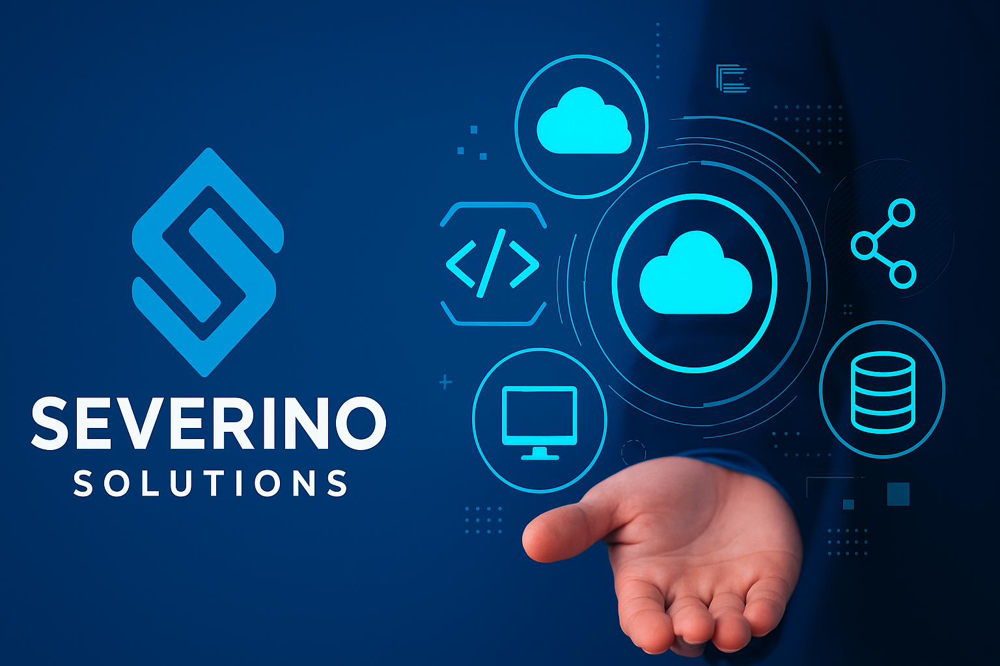

Saiba quem somos!
Com mais de 9 anos de dedicação ao universo da tecnologia, a Severino Solutions é referência em soluções inteligentes para pequenas e médias empresas. Nosso compromisso é transformar desafios em oportunidades, oferecendo serviços que elevam o desempenho e a segurança do seu negócio.
Atuamos com excelência em:
Na Severino Solutions, priorizamos um atendimento próximo e soluções modernas, sempre buscando superar as expectativas dos nossos clientes.
Venha nos conhecer e descubra como podemos impulsionar o futuro da sua empresa com inovação e confiança.
Conheça nossas soluções diferenciadas, saiba como elas podem ajudar o seu negócio.